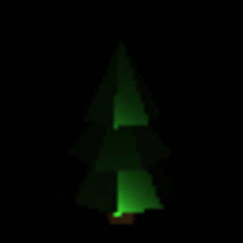

Optimizing Scene Parameters using Optim.jl
In this tutorial we will explore the exact same problem as demonstrated in Inverse Lighting Tutorial but this time we will use the Optimization Package Optim.jl. I would recommend going through a few of the tutorials on Optim before starting this one.
If you have already read the previous tutorial, you can safely skip to Writing the Optimization Loop using Optim. The part previous to this is same as the previous tutorial.
using RayTracer, Images, Zygote, Flux, Statistics, OptimScript for setting up the Scene
screen_size = (w = 64, h = 64)
scene = load_obj("./tree.obj")
cam = Camera(
Vec3(0.0f0, 6.0f0, -10.0f0),
Vec3(0.0f0, 2.0f0, 0.0f0),
Vec3(0.0f0, 1.0f0, 0.0f0),
45.0f0,
0.5f0,
screen_size...
)
origin, direction = get_primary_rays(cam)
function render(light, scene)
packed_image = raytrace(origin, direction, scene, light, origin, 2)
array_image = reshape(hcat(packed_image.x, packed_image.y, packed_image.z),
(screen_size.w, screen_size.h, 3, 1))
return array_image
end
showimg(img) = colorview(RGB, permutedims(img[:,:,:,1], (3,2,1)))
light_gt = PointLight(
Vec3(1.0f0, 1.0f0, 1.0f0),
20000.0f0,
Vec3(1.0f0, 10.0f0, -50.0f0)
)
target_img = render(light_gt, scene)
showimg(zeroonenorm(render(light_gt, scene)))
light_guess = PointLight(
Vec3(1.0f0, 1.0f0, 1.0f0),
1.0f0,
Vec3(-1.0f0, -10.0f0, -50.0f0)
)
showimg(zeroonenorm(render(light_guess, scene)))Writing the Optimization Loop using Optim
Since, there is no direct support of Optim (unlike for Flux) in RayTracer the interface might seem a bit ugly. This is mainly due to the way the two optimization packages work. Flux allows inplace operation and ideally even RayTracer prefers that. But Optim requires us to give the parameters as an AbstractArray.
Firstly, we shall extract the parameters, using the RayTracer.get_params function, we want to optimize.
initial_parameters = RayTracer.get_params(light_guess)[end-3:end]Since the input to the loss_function is an abstract array we need to convert it into a form that the RayTracer understands. For this we shall use the RayTracer.set_params! function which will modify the parameters inplace.
In this function we simply compute the loss values and print it for our reference
function loss_function(θ::AbstractArray)
light_optim = deepcopy(light_guess)
RayTracer.set_params!(light_optim.intensity, θ[1:1])
RayTracer.set_params!(light_optim.position, θ[2:end])
loss = sum((render(light_optim, scene) .- target_img) .^ 2)
@show loss
return loss
endRayTracer uses Zygote's Reverse Mode AD for computing the derivatives. However, the default in Optim is ForwardDiff. Hence, we need to override that by giving our own gradient function.
function ∇loss_function!(G, θ::AbstractArray)
light_optim = deepcopy(light_guess)
RayTracer.set_params!(light_optim.intensity, θ[1:1])
RayTracer.set_params!(light_optim.position, θ[2:end])
gs = gradient(light_optim) do L
sum((render(L, scene) .- target_img) .^ 2)
end
G .= RayTracer.get_params(gs[1])[end-3:end]
endNow we simply call the optimize function with LBFGS optimizer.
res = optimize(loss_function, ∇loss_function!, initial_parameters, LBFGS())
@show res.minimizerIt might be interesting to note that convergence using LBFGS was much faster (only 252 iterations) compared to ADAM (401 iterations).
If we generate a gif for the optimization process it will look similar to this

This page was generated using Literate.jl.